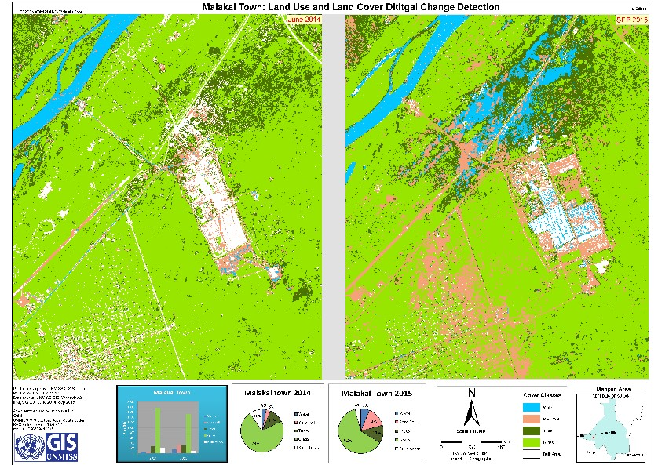
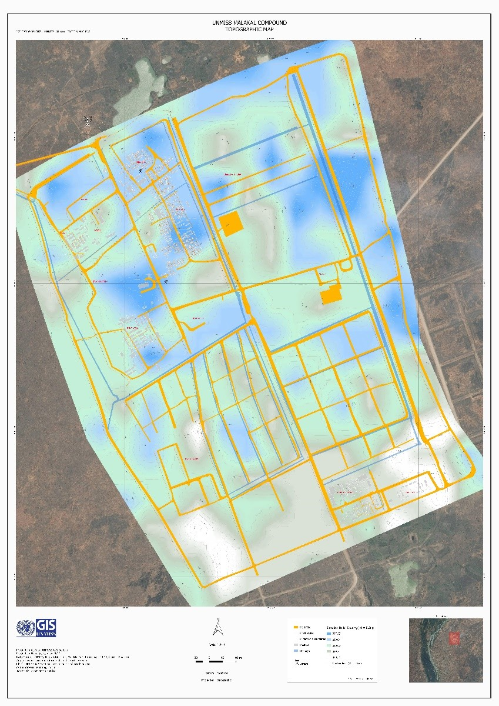
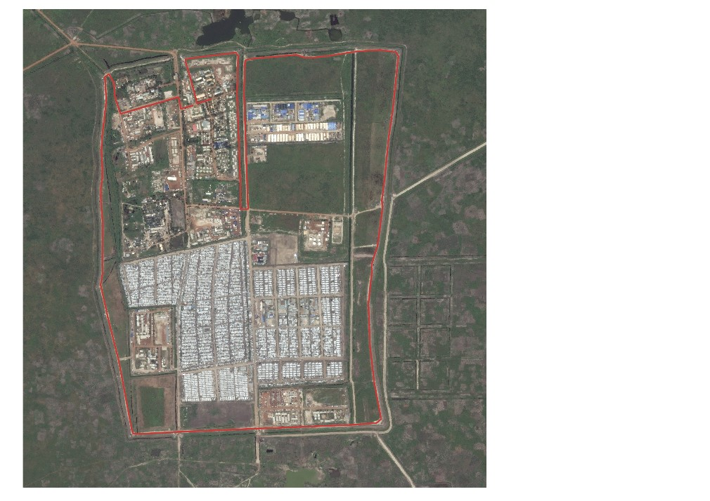
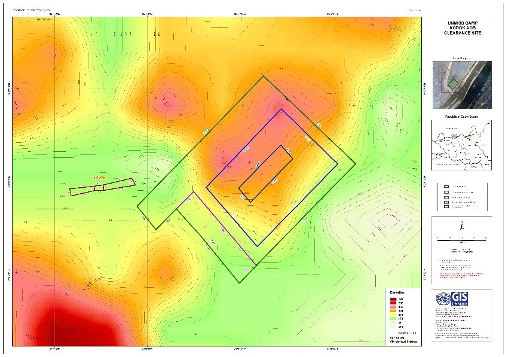
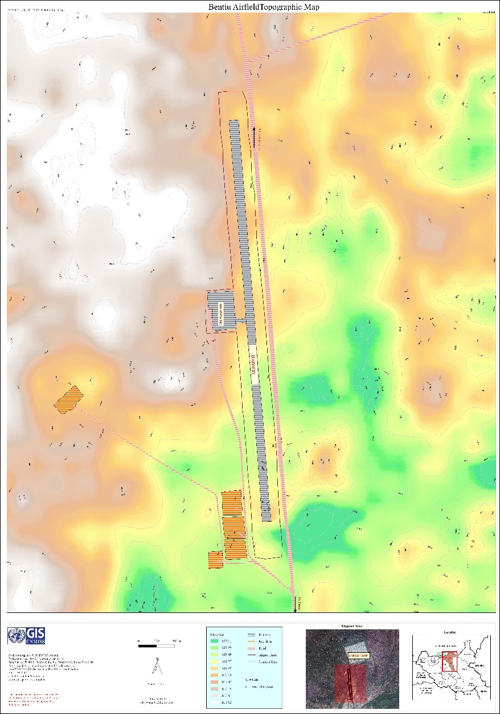
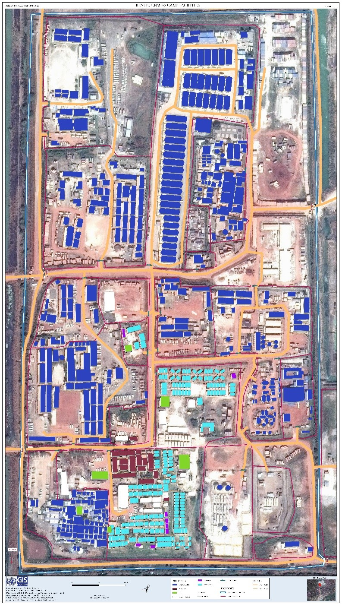
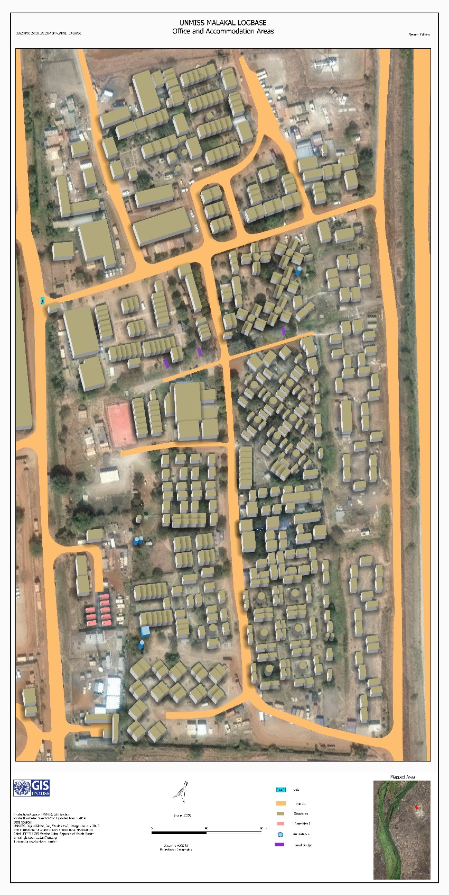

Best Practices
| Subject | [Best Practice] Implementing the UN Open GIS Initiative in United Nations Mission in South Sudan |
|---|---|
| Name | 관리자 |
| Date | 2019-12-20 |
| Views | 33,771 |
Implementing the UN Open GIS Initiative in United Nations Mission in South Sudan
By Majur Achiew (GIS Assistant) and Remi Kouakou (GIS Officer), UNMISS
Following the UN Open GIS training course for QGIS and PostGIS, which was contributed by the UN Committee from the Open Source Geospatial Foundation (OSGeo) with support of volunteers of GeoForAll, the United Nations Mission in South Sudan (UNMISS) GIS team leader in Malakal (GIS OIC, Malakal), who attended, initiated a discussion in the field office to implement the objectives of the training course.
Harnessing open source technologies through partnership
UN Open GIS is an initiative conceived by the UNGIS Section of the Operations Support Division of the Office of Information and Communications Technology (OICT) to leverage free and open source software resources. The undertaking was first brought to the table in September 2015 in Vienna, Austria, mainly to establish an open source program for peace operations (Eom, 2016). The result was the establishment of the UN Open GIS Initiative in March 2016 that would harness open source technologies through partnership. The UN Open GIS Initiative recommends a phased approach in a hybrid model, and these four (4) phases (or Working groups) are called “Spirals”.
- Spiral-1 forms a web-based GeoPortal platform;
- Spiral-2 focuses on capacity building for open source software applications to be used for operational requirements specific to each field mission;
- Spiral-3 is devoted to developing geospatial analysis solutions;
- Spiral-4 will take on developing applications for data collection including the use of UAVs (ICTD, 2017) and optimizing vector tiles, etc.
Building QGIS capacity in Malakal
As part of the Spiral-2, which aims to build UN capacity for utilizing available open source software applications, the UNMISS Malakal GIS team was encouraged by their OIC to embark on an in-house training using QGIS tools at disposal. The decision to dedicate time to learn open source GIS software was not only based on the UN Open GIS Initiative, but it also due to the licensing constraints from proprietary software and applications that field missions face.
Free and Open Source Software
Free and Open Source Software (FOSS) provides flexibility in
terms of access to source-code and for ease of understanding and
modification, which in some cases can be either cheap or free as
in monetary value (Dempsey, 2017). FOSS offers greater access to
range of services with little restrictions on the users. The
best part of FOSS is either getting rid of or reducing the
reliance on proprietary software - the licensing contracts for
which can be expensive and inflexible. UN Open GIS Initiative
was conceived to harness the available resources in the Open GIS
community to not only reduce costs but also to increase
efficiency and flexibility in service delivery and
innovation.
It was against these backdrops that the Malakal GIS team
embarked on projects that utilize the resources of open source
GIS software.
QGIS
QGIS is a free and open source GIS software with powerful tools.
It was understood that a combination of several FOSS
applications aided by the open source software with all GIS
capabilities would yield the desire results. This was how some
of the product items requested by peacekeepers at UNMISS Sector
North were produced.
Initially, only the Malakal GIS OIC took the online QGIS course
offered by Politecnico di Milano, a UN Open GIS partner. Upon
completing the course in November 2016, all the staff in the
Malakal field GIS office were encouraged to learn and use the
software as part of the in-house training facilitated by the
OIC. The other staff would later, in 2018, take the same course
while having acquired the basics. Malakal GIS team currently
operates in open source platform for almost all operational
needs.
Open source GIS software utilization
- Digital Change Detection: Land Use and Land Cover (Impacts of IDPs on land and resources)
-
Topographic Maps (Engineering operations, Camp management, and
aviation planning)
- Malakal Compound Topographic Map
- Kodok AOB Topographic Map
- Bentiu Airfield Topographic Map
- UNMISS Malakal Marathon Circuit Map
-
3D Maps (Camp management, Engineering)
- Malakal Compound 3D Map
- Bentiu UNMISS 3D Camp
These products have already been popular among the mission’s Engineering, Aviation, and Camp Management sections.
Benefits of using open source GIS software
The samples highlighted in next pages, affirms that there exist
several benefits of using open source GIS software. Successful
completion of large-scale works using FOSS, combined with some
proprietary software in UN GIS will provide a variety of options
to choose and a safety net for business continuity in case of
licensing issues.
All staff are currently fully operating in QGIS as well as in
proprietary software. Most staff are more confident in using
QGIS due to the flexibility to accessing a variety of extensions
(plug-ins) that are freely offered.
FOSS challenges, QGIS
Open source programs are very dynamic in many aspects including frequent changes that take so much of the user’s time to adapt. Much of the tools and functionalities in QGIS as with most Open source programs, are too technical for beginners. This comes from the prime objective of the open source, which is geared toward programmers and scientists. While this gives them flexibility and efficiency, it does the exact opposite to less technical and less experienced users, something propriety vendors (e.g. ArcGIS) avoid.
Image preview of the products created using Free and Open Source Software programs are included below. These are meant for review only and as such the visual quality has been intentionally reduced for article space purposes. Interested individuals or parties can find these products on UNMISS GIS Portal or make a special request for higher quality items.
References:
- ICTD, 2017, UN GIS Goes “Open”: DFS, https://ft.dfs.un.org/un-gis-goes-%E2%80%9Copen%E2%80%9D
- Eom, 2016, UN Open GIS is a GIS Community Initiative: DFS, https://ft.dfs.un.org/un-open-gis-gis-community-initiative
- Dempsey, 2017. Open Source GIS and Freeware GIS Applications. https://www.gislounge.com/open-source-gis-applications/
 Figure 1. Malakal Town (airport part) Land Use and Land Cover Digital Change Detection. (Left: Malakal Town in 2014. Right: Malakal Town in 2015 after IDPs moved to UNMISS Camp). This is used to track changes in the land use (built areas, agriculture, tree cutting etc.) or land cover changes due to displacement of local population.
 Figure 2: UNMISS Malakal Camp Land Use and Land Cover Digital
Change Detection. (Left: UNMISS Camp in 2014. Right: UNMISS Camp
in 2015 after IDPs moved in). This is used to track changes in
the land use (built areas, agriculture, tree cutting etc.) or
land cover changes due to displacement of local population.
Figure 2: UNMISS Malakal Camp Land Use and Land Cover Digital
Change Detection. (Left: UNMISS Camp in 2014. Right: UNMISS Camp
in 2015 after IDPs moved in). This is used to track changes in
the land use (built areas, agriculture, tree cutting etc.) or
land cover changes due to displacement of local population.
 Figure 3. UNMISS Malakal Compound Topographic Map showing elevation of the camp. Blue is high while white is low.
 Figure 4: Marathon Circuit Map. An animated video was also created but omitted for technical reason. The animation follows the red line which is not visible until the video starts.
 Figure 5: Kodok AOB Topo map showing elevation of the proposed area for the UNMISS COB. Red is high, and green is low. A helpful tool for the engineers during earlier plans.
 Figure 6: Bentiu Airfield Topo Map showing elevation of the airfield. Green is low while white is high.
 Figure 7: UNMISS Bentiu Office and Accommodation 3D Map. Helps camp management staff near-real-world sense of the area as opposed to traditional 2D maps.
 Figure 8: UNMISS Malakal Camp 3D Map. Only relatively permanent structures are included in the 3D output. Most of the left-out objects are either containers or temporary facilities.